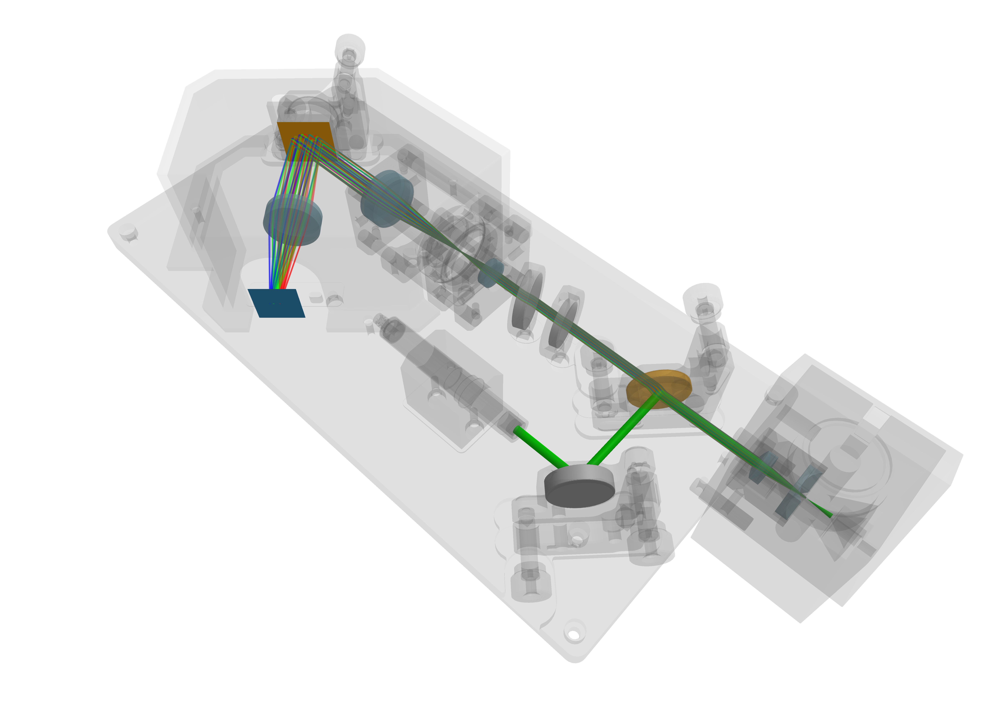
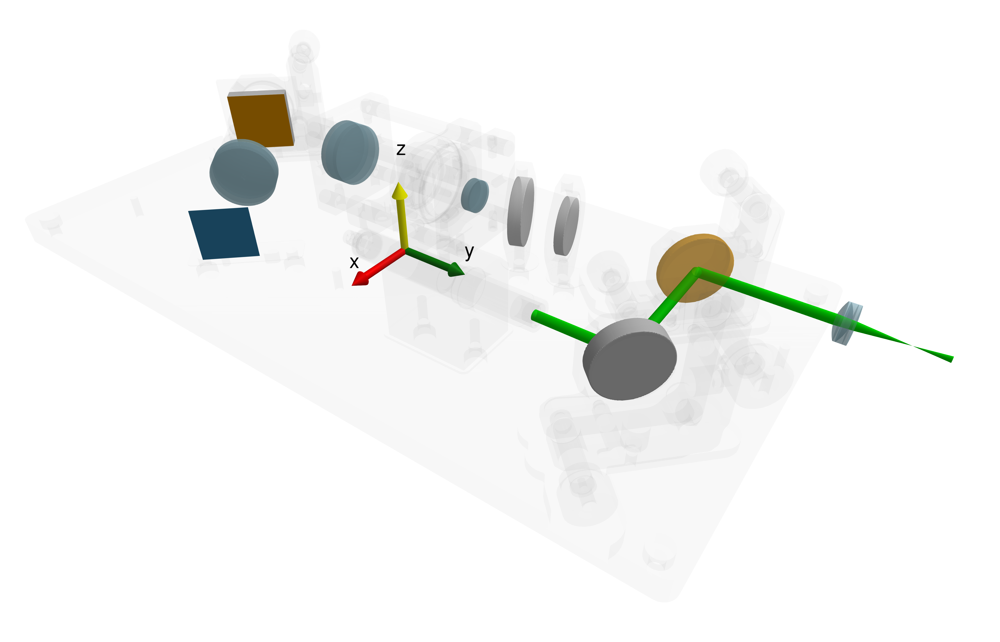
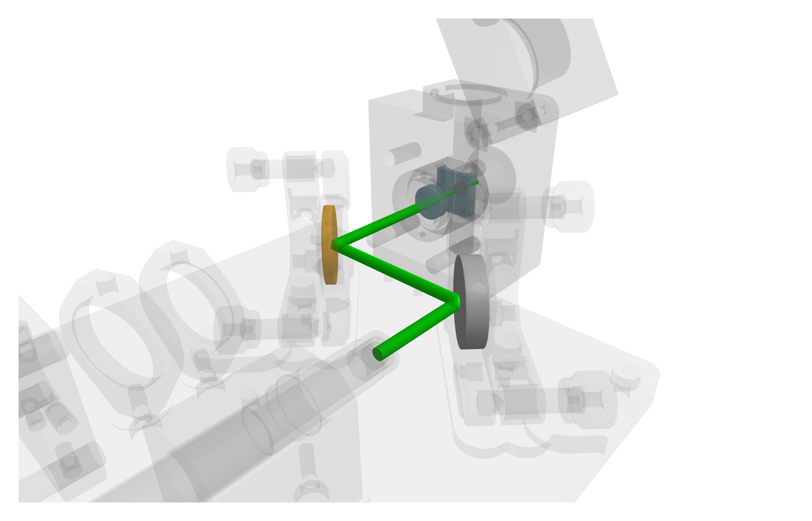
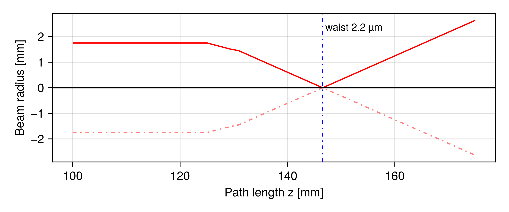
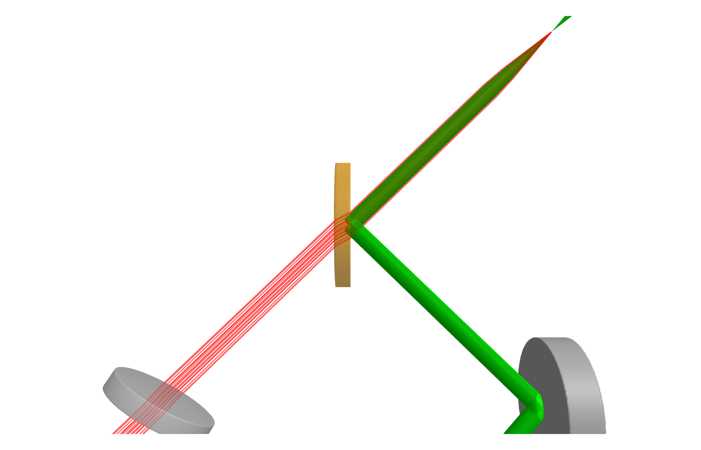
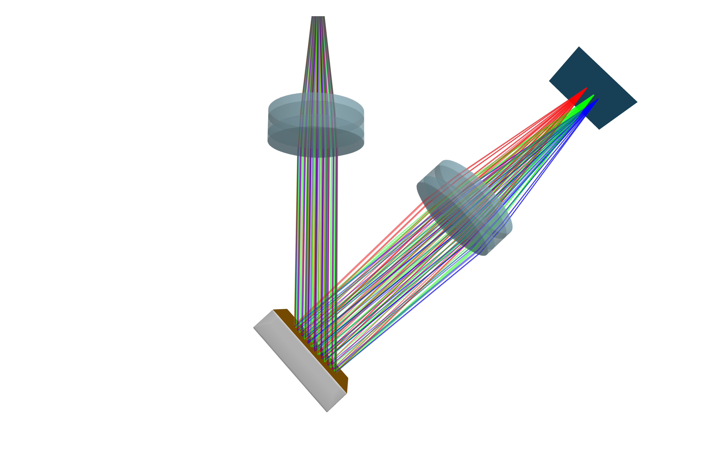
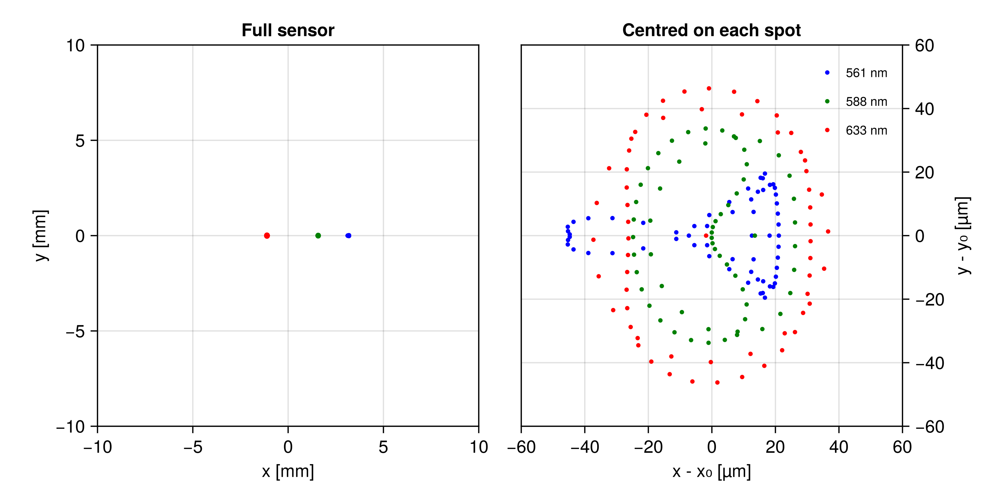
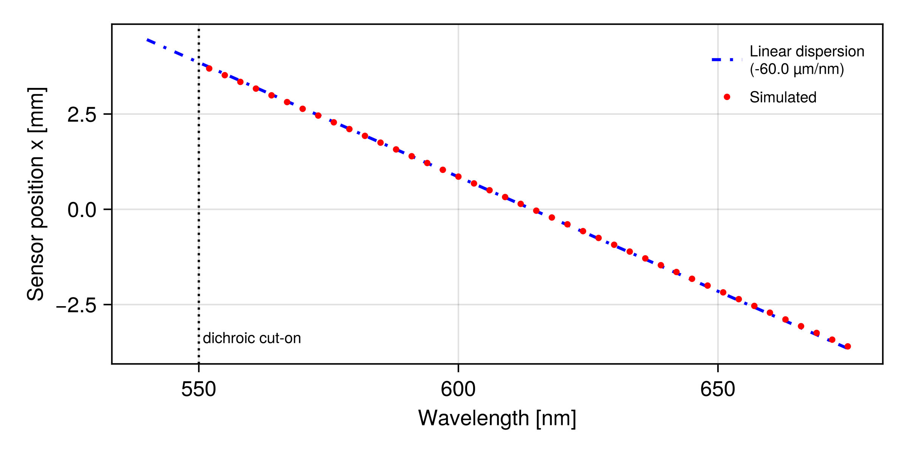

Raman spectroscopy
OpenRAMAN is an open-source Raman spectrometer designed by Luc Boussemaere [3]. A 532 nm laser is focused into a sample, the tiny fraction of light that comes back Raman-shifted is separated from the excitation light by a dichroic mirror, and a reflective diffraction grating spreads it across a camera sensor. In this advanced tutorial the instrument is rebuilt in BMO. You will learn how to:
- Write your own optical component by implementing
BeamletOptics.interact3d - Build a component out of several shapes using the
BeamletOptics.MultiShapetrait - Give a component its own
render!method - Trace a
GaussianBeamletand geometricalPointSourceray bundles through the system - Extract a spectral calibration from the
Detectorand check it against theory

The optomechanical parts are exported from the OpenRAMAN CAD package, which is published under CERN-OHL-W-v2. They are included for illustration only. The optical elements themselves are modelled after parts from the Thorlabs product catalog; each is linked to its product page where it is first introduced below.
This package uses Makie for visualization purposes. However, it is not imported directly as part of this package. You must install it manually e.g. via ] add GLMakie into your current project environment. When both Makie and this package are loaded – that is via using GLMakie, BeamletOptics – the Makie extension of this package will become available.
How to follow this tutorial
All figures you will see below are pregenerated. The full code and all 3D assets are available in the following files:
┌ Info: Files located at:
└ path = "/home/runner/work/BeamletOptics.jl/BeamletOptics.jl/docs/build/assets/raman_assets"Two of them matter for this tutorial:
OpenRaman/, a small Julia module holding the custom components built belowopenraman_showcase.jl, the script that assembles the instrument and renders every figure
The custom components are a real module rather than a loose script, because they add methods to BeamletOptics functions and those methods should be defined exactly once. To follow along, start your own script like this:
using GLMakie, BeamletOptics
const BMO = BeamletOptics
const mm = 1e-3
const nm = 1e-9
include(joinpath(raman_dir, "OpenRaman", "OpenRaman.jl"))
using .OpenRamanRefer to the Visualization section for the plotting API used throughout.
The baseplate coordinate frame
Every position in this tutorial is a CAD coordinate measured from the baseplate origin, taken straight out of the OpenRAMAN assembly drawing. Numbers such as [29.925mm, 110.721mm, 21.778mm] are not tuned by hand. They are where the part sits on the real instrument. The baseplate origin and its axes are drawn below: y runs along the long axis of the baseplate, x across it and z upwards, which is why almost every component is rotated about z only.

The housing itself is loaded with MeshDummy, which wraps a mesh in a NonInteractableObject: it is rendered, but the solver ignores it. That lets you inspect beam clearance against the real hardware in the same scene as the optical path.
baseplate = MeshDummy(joinpath(raman_dir, "Baseplate.stl"))
cover = MeshDummy(joinpath(raman_dir, "Cover.stl"))The excitation path
The pump is a 532 nm laser with a 3.5 mm beam diameter. Since it is a coherent, single-mode source, it is modelled as a single GaussianBeamlet:
laser = GaussianBeamlet(
[29.925mm, 79.721mm, 21.778mm], # beam origin on the baseplate
[0, 1, 0], # propagation along +y
532nm,
3.5mm/2 # waist radius
)It is folded by a RoundPlanoMirror, modelled after the Thorlabs PF10-03-G01, into a dichroic mirror, which turns it upwards into the cuvette. The cuvette holder carries a cemented SphericalDoubletLens, modelled after the Thorlabs AC127-019-A, that focuses the pump into the sample, and a cylindrical Lens on the entrance side. All three parts, including the holder mesh, are bundled into an ObjectGroup so that they move as one rigid assembly:
cuvette_mesh = MeshDummy(joinpath(raman_dir, "Cuvette Holder.stl"))
AC127_019 = SphericalDoubletLens(12.9mm, -11mm, -59.3mm, 4.5mm, 1.5mm, 12.7mm, N_BAF10, N_SF6HT)
LK1085L1 = Lens(CylindricalSurface(-10.3mm, 15mm, 17mm), 2mm, N_BK7)
yrotate3d!(LK1085L1, deg2rad(-90))
zrotate3d!(LK1085L1, deg2rad(180))
translate_to3d!(LK1085L1, [0, 15.857mm + thickness(LK1085L1), 0])
cuvette_holder = ObjectGroup([AC127_019, LK1085L1, cuvette_mesh])
translate_to3d!(cuvette_holder, [-20.075mm, 154.648mm, 21.779mm])
The glass models N_BAF10, N_SF6HT and N_BK7 are plain SellmeierEquation objects defined in OpenRaman/glasses.jl. Dispersion matters here: the whole point of the instrument is that different wavelengths behave differently.
An ObjectGroup is a kinematic container. When you hand a group to a System it is flattened, and every element inside it becomes part of the trace. In this tutorial only AC127_019 is passed to the system: the cylindrical lens LK1085L1 is rendered but deliberately held out of the traced set, so that the excitation focus stays a clean single-lens focus.
A GaussianBeamlet is stigmatic: it carries a single scalar waist w0 on three coplanar rays, so it has no second transverse axis on which to put a different waist. Tracing the pump beam through a cylindrical surface therefore reports a focus governed by whichever single plane the beamlet's waist rays happen to occupy, which is not a physically meaningful answer.
Capturing what the cylinder actually does needs the nine-ray AstigmaticGaussianBeamlet, which propagates a full complex curvature matrix and so can hold two independent waists. See Astigmatic polarized beamlets.
Where does the pump focus?
gauss_parameters evaluates the beam radius, wavefront curvature and Gouy phase at a series of positions along the beam path, and point_on_beam turns a path length back into a point in space:
zs = LinRange(100mm, 175mm, 1000)
w, R, ψ, ~ = gauss_parameters(laser, zs)
w_min, i_min = findmin(w)
focal_point = point_on_beam(laser, zs[i_min])[1]
The beam stays collimated at 1.75 mm until the cuvette doublet at about 125 mm of path length, then converges to a waist of roughly 2.2 µm about 21 mm behind the lens, inside the sample. That waist is the volume from which Raman light is emitted, and it is where the ray bundles of the next section originate.
A wavelength-dependent component
Everything so far used stock BMO components. The dichroic mirror is the first one that does not exist in the package, and it is the smallest possible example of a custom element: an optic whose behaviour branches on the wavelength of the incoming ray.
A custom component is a subtype of BeamletOptics.AbstractObject. With the default BeamletOptics.SingleShape trait, all it needs is a shape field. The kinematic API (translate3d!, zrotate3d!, position, ...) then works for free:
struct LongpassDichroicMirror{T, N <: BMO.RefractiveIndex} <: BMO.AbstractObject{T}
shape::BMO.PlanoSurfaceSDF{T}
n::N
cuton::T
endThe optical behaviour lives in BeamletOptics.interact3d. It is handed the system, the object, the beam and the ray that just hit it, and returns either nothing (the trace stops) or a BeamletOptics.BeamInteraction holding the next ray segment:
function BMO.interact3d(system::BMO.AbstractSystem, ldm::LongpassDichroicMirror,
::BMO.Beam{T, R}, ray::R) where {T <: Real, R <: Ray{T}}
if BMO.wavelength(ray) < ldm.cuton
# below cut-on: behave like a plane mirror
normal = BMO.normal3d(BMO.intersection(ray))
npos = BMO.position(ray) + BMO.length(ray) * BMO.direction(ray)
ndir = BMO.reflection3d(BMO.direction(ray), normal)
return BMO.BeamInteraction{T, R}(
nothing,
Ray{T}(npos, ndir, nothing, BMO.wavelength(ray), BMO.refractive_index(ray))
)
else
# above cut-on: behave like a refractive plate
...
end
endThe transmitting branch is the standard two-surface plate refraction. It is worth looking at in the source, because it shows the BeamletOptics.Hint mechanism: after entering the substrate the solver has to be told to test this same object again, otherwise it would go looking for the next element and never find the exit surface. See the Hints section for why this burden sits with the component author.
if BMO.isentering(ray)
n1 = BMO.refractive_index(ray)
n2 = BMO.refractive_index(ldm, lambda)
hint = BMO.Hint(ldm) # test this object again next cycle
else
n1 = BMO.refractive_index(ldm, lambda)
n2 = BMO.refractive_index(system, lambda)
hint = nothing
normal = -normal # flip for refraction3d
endThe full component is in OpenRaman/longpass.jl, named after the Thorlabs DMLP550 it stands in for. We can check it does what it claims:
DMLP550 = LongpassDichroicMirror(25.4e-3, 3e-3, UV_Fused_Silica, 550e-9)
zrotate3d!(DMLP550, deg2rad(45))
check = System([DMLP550])
for λ in (532e-9, 633e-9)
beam = Beam(Ray([0.0, -0.05, 0.0], [0.0, 1.0, 0.0], λ))
solve_system!(check, beam)
dir = BeamletOptics.direction(BeamletOptics.rays(beam)[end])
@info "λ = $(round(λ*1e9)) nm" round.(dir, digits=3)
end┌ Info: λ = 532.0 nm
│ round.(dir, digits = 3) =
│ 3-element Point{3, Float64} with indices SOneTo(3):
│ 1.0
│ -0.0
└ 0.0
┌ Info: λ = 633.0 nm
│ round.(dir, digits = 3) =
│ 3-element Point{3, Float64} with indices SOneTo(3):
│ -0.0
│ 1.0
└ 0.0The 532 nm pump leaves along +x, i.e. it was turned through 90°, while the 633 nm ray carries straight on along +y. In the instrument that is exactly the separation between the two arms:

The green 532 nm pump arrives from the fold mirror at the lower right and is reflected up into the cuvette. The red 633 nm Raman light returns down the same axis, passes straight through the dichroic and continues to the lower left, into the collection arm.
A custom diffractive component
The grating is the heart of the spectrometer, modelled after the Thorlabs GR25-1205, and a more involved custom component: it is built from two shapes, it draws itself, and its interaction is a diffraction rather than a reflection.
Multiple shapes
A real grating is one-sided. Light hitting the ruled face is diffracted; light hitting the back is simply lost. That is modelled with two shapes (a flat mesh for the ruled face and an opaque box behind it) declared through the BeamletOptics.MultiShape trait:
struct ReflectiveGrating{T} <: BMO.AbstractObject{T}
grating::BMO.Mesh{T}
substrate::BMO.BoxSDF{T}
groove_density::T # lines/meter
order::Int8
end
BMO.shape_trait_of(::ReflectiveGrating) = BMO.MultiShape()
BMO.shape(rg::ReflectiveGrating) = (rg.grating, rg.substrate)shape returns a tuple, and that is all the kinematic API needs: the object now translates and rotates as one rigid body. The first shape in that tuple defines the kinematic centre, so position(grating) is the centre of the ruled face, exactly the reference you want when placing the part.
function RectangularReflectiveGrating(width, height, thickness, groove_density, order)
grating = BMO.RectangularFlatMesh(width, height)
substrate = BMO.BoxSDF(width, thickness, height)
# offset the substrate by a hair so that the two shapes do not share a surface
translate3d!(substrate, [0, thickness/2 + 1e-6, 0])
return ReflectiveGrating(grating, substrate, groove_density, Int8(order))
endDrawing it
Without a render! method a multi-shape object is drawn in a single default colour. One method is enough to give each shape its own appearance:
function BMO.render!(ax::LScene, gr::ReflectiveGrating; kwargs...)
BMO.render!(ax, gr.grating; color=:orange, kwargs...)
BMO.render!(ax, gr.substrate; color=:white, transparency=true, kwargs...)
return nothing
endThe vector grating equation
Textbook treatments write the grating equation for the plane of incidence: $\sin\alpha + \sin\beta = m\lambda/d$. That form assumes you already know the plane of incidence, which a non-sequential 3D tracer does not, since the grating can be mounted at any angle. The vector form has no such assumption.
Decompose the incident direction $\hat{v}_{in}$ into a part along the surface normal $\hat{n}$ and a part in the surface plane, add the grating momentum along the in-plane dispersion axis $\hat{g}$, and rebuild the normal part from the unit-length constraint:
\[\vec{v}_{t}' = \vec{v}_{t} + m \frac{\lambda}{d}\,\hat{g}, \qquad \hat{v}_{out} = \vec{v}_{t}' \pm \hat{n}\sqrt{1 - \lVert \vec{v}_{t}' \rVert^2}\]
Here $\hat{g}$ is the object's own local x-axis, projected onto the tangent plane, so the dispersion direction follows the part when you rotate it. If $\lVert \vec{v}_{t}' \rVert$ exceeds one, the requested order is evanescent and the ray is dropped.
In code:
function BMO.interact3d(::BMO.AbstractSystem, gr::ReflectiveGrating,
::Beam{T, R}, ray::R) where {T <: Real, R <: Ray{T}}
# if the substrate was hit, the ray is absorbed and the trace stops here
if BMO.shape(BMO.intersection(ray)) === gr.substrate
return nothing
end
normal = BMO.normal3d(BMO.intersection(ray))
v_in = BMO.direction(ray)
lambda = BMO.wavelength(ray)
# dispersion axis, projected into the local tangent plane
dispersion_dir = BMO.orientation(gr)[:,1]
g_hat = normalize(dispersion_dir - dot(dispersion_dir, normal) * normal)
# split the incident direction
v_in_dot_n = dot(v_in, normal)
v_in_tangent = v_in - v_in_dot_n * normal
# vector grating equation
v_out_tangent = v_in_tangent + (gr.order * lambda * gr.groove_density) * g_hat
tangent_sq = dot(v_out_tangent, v_out_tangent)
if tangent_sq > one(T)
@debug "ray misses grating mode / evanescent cutoff"
return nothing
end
# rebuild the normal component, rebounding opposite to the incident sign
v_out_normal_mag = sqrt(max(zero(T), one(T) - tangent_sq))
v_out_normal = (v_in_dot_n < 0 ? normal : -normal) * v_out_normal_mag
ndir = normalize(v_out_tangent + v_out_normal)
npos = BMO.position(ray) + BMO.length(ray) * BMO.direction(ray)
return BMO.BeamInteraction{T, R}(
nothing,
BMO.Ray{T}(npos, ndir, nothing, lambda, BMO.refractive_index(ray))
)
endNote the guard at the top: with a BeamletOptics.MultiShape object, interact3d is called for any of its shapes, so the method has to ask which one was hit. Comparing BMO.shape(BMO.intersection(ray)) against the substrate is what makes the component one-sided.
The result can be checked against the scalar equation at normal incidence, where the two forms must agree:
grating = RectangularReflectiveGrating(25e-3, 25e-3, 6e-3, 1.2e6, 1) # 1200 lines/mm, m = 1
check = System([grating])
λ = 588e-9
beam = Beam(Ray([0.0, -0.05, 0.0], [0.0, 1.0, 0.0], λ)) # normal incidence
solve_system!(check, beam)
d_out = BeamletOptics.direction(BeamletOptics.rays(beam)[end])
β_sim = asind(sqrt(d_out[1]^2 + d_out[3]^2))
β_ana = asind(1 * λ * 1.2e6)
@info "Diffraction angle at normal incidence" β_sim β_ana┌ Info: Diffraction angle at normal incidence
│ β_sim = 44.878037543478655
└ β_ana = 44.878037543478655Tracing two beam models through one system
The instrument is now complete. All optical elements go into a single StaticSystem – note that the order in which they are listed is irrelevant, because BMO traces non-sequentially:
optical_system = StaticSystem([
AC127_019, PF10G01, DMLP550, FELH0550, WG41050,
AC127_019_col, AC254_050_1, GR25_1205, AC254_050_2, pd
])The two components not yet named above are also Thorlabs parts: FELH0550 is a FELH0550 longpass filter, WG41050 a WG41050 precision window, and the two focusing doublets AC254_050_1 and AC254_050_2 are both AC254-050-A achromats.
The two arms of the instrument carry physically different light, and BMO lets you model each with the beam type that fits:
- The excitation is a coherent, single-mode laser. A
GaussianBeamletcarries waist, curvature and phase, which is what you need to answer "how tightly does it focus in the cuvette?". - The Raman return is incoherent light emitted in all directions from the excited volume. There is no meaningful waist or phase front to propagate. A
PointSource(a cone of independentBeams) is the right model, and the question it answers is "where does each wavelength land on the sensor?".
Both are solved against the same system, with the same solve_system! call:
solve_system!(optical_system, laser) # GaussianBeamlet
raman_origin = position(AC127_019) .+ [0, 21.62mm, 0]
raman_sources = map((561nm, 588nm, 633nm)) do λ
PointSource(raman_origin, [0, -1, 0], deg2rad(6), λ; num_rays=60, num_rings=3)
end
spots = map(raman_sources) do src
empty!(pd)
solve_system!(optical_system, src)
spot_diagram(pd)
endAll three sources start at the same point with the same spread angle, so the only thing that differs between them is the wavelength. With that in place the render shows all three colours travelling the shared collection arm together, because the optics up to the grating are (nearly) achromatic. They only separate where the physics separates them, at the grating:

The collimated bundle enters from the top, diffracts off the ruled face, and the focusing doublet turns the wavelength-dependent angles into three distinct positions on the sensor.
Spots on the sensor
spot_diagram returns the hit positions in the detector's local coordinates:
spot_fig = Figure(size=(800, 400))
spot_ax = Axis(spot_fig[1,1], xlabel="x [mm]", ylabel="y [mm]", aspect=1, title="Full sensor")
for (sd, c, l) in zip(spots, (:blue, :green, :red), ("561 nm", "588 nm", "633 nm"))
scatter!(spot_ax, first.(sd)*1e3, last.(sd)*1e3; color=c, markersize=5, label=l)
end
On the left, at the scale of the 20 mm sensor, the three lines are cleanly resolved and each collapses to a point. The right panel re-centres every cluster on its own centroid to show the actual geometric blur. The 561 nm and 588 nm spots are comparable, at an RMS radius of about 25 µm, while the 633 nm spot has grown to roughly 38 µm; the shape also turns, from an x-elongated blur at 561 nm to a y-elongated one at 633 nm. The collection optics are best corrected across the short-wavelength half of the range and fall off towards the red. That is a real design trade-off that falls out of the simulation without having been put in.
A Detector reports its hits in a left-handed (x, z) frame, so that a spot diagram reads the right way round when viewed from the incoming beam. Its local x-axis is therefore -orientation(pd)[:,1], which matters as soon as you compare simulated positions against an analytical model.
Spectral calibration
The payoff of a spectrometer model is the map from wavelength to sensor position. Sweeping the source wavelength and recording the centroid of each spot gives it directly:
centroid(pts) = sum(pts) / length(pts)
λ_sweep = LinRange(540nm, 675nm, 46)
x_sweep = map(λ_sweep) do λ
src = PointSource(raman_origin, [0, -1, 0], deg2rad(6), λ; num_rays=40, num_rings=2)
empty!(pd)
solve_system!(optical_system, src)
# below the DMLP550 cut-on the light never leaves the excitation arm
isnothing(BMO.hits(pd)) && return NaN
return centroid(spot_diagram(pd))[1]
endThis can be checked against first-order theory. The grating equation $\sin\beta = m\lambda/d - \sin\alpha$ gives the diffraction angle for a mount angle $\alpha$, and the focusing lens of focal length $f$ converts angle into position, so the linear dispersion is
\[\frac{\mathrm{d}x}{\mathrm{d}\lambda} = \frac{m\,f}{d \cos\beta}\]
sinβ(λ) = grating_order * λ * groove_density - sind(grating_alpha)
# the sensor's local x-axis runs opposite to the grating dispersion axis
pd_local_x = -BMO.orientation(pd)[:,1]
x_sign = sign(dot(pd_local_x, BMO.orientation(GR25_1205)[:,1]))
β_ref = asin(sinβ(588nm))
dxdλ = x_sign * grating_order * f_focus * groove_density / cos(β_ref)
The simulated centroids sit on the analytical line across the whole range, at a dispersion of about 60 µm/nm, or around 17 nm of spectrum per millimetre of sensor. Two things are worth noticing. First, nothing at all reaches the sensor below 550 nm: the custom dichroic sends everything below its cut-on back into the excitation arm, which is the entire reason a Raman instrument can see a signal a million times weaker than the pump. Second, the agreement with the first-order model is not built in anywhere. The tracer only ever applied the vector grating equation, ray by ray, at whatever angle each ray happened to arrive.
The model is a starting point, not a finished instrument. Rotating GR25_1205 about z scans a different spectral window across the sensor; moving AC254_050_2 along its optical axis lets you rebalance the focus between the blue and red ends of the range; and adding further PointSources at other Stokes shifts extends the calibration curve over the rest of the sensor.